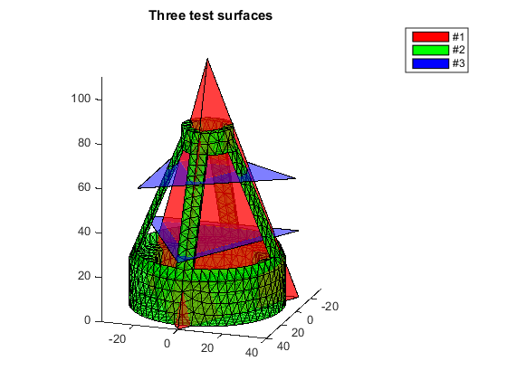
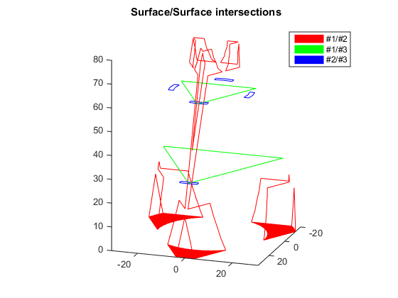
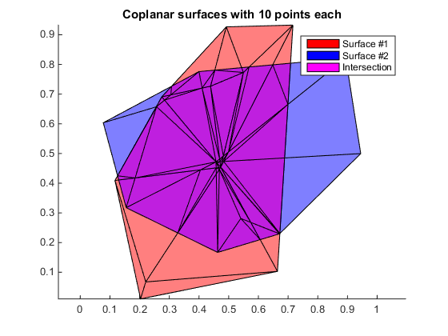
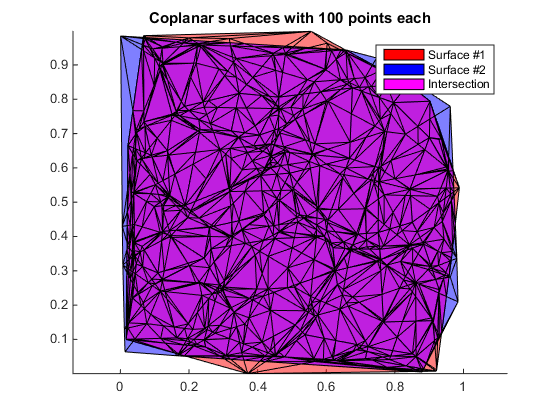
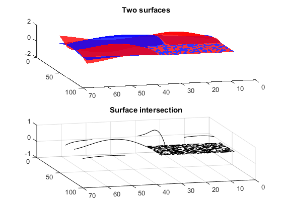
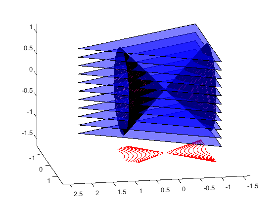

Tutorial for SurfaceIntersection Function
By Jarek Tuszynski (jaroslaw.w.tuszynski@leidos.com)
Triangle/triangle intersection using the algorithm proposed by Tomas Möller (1997), implemented as highly vectorized MATLAB code. The algorithm was expanded to include calculation of the intersection surface.
[intMatrix, intSurface] = SurfaceIntersection(surface1, surface2) calculates the intersection of surfaces 1 and 2. Code can either return just the matrix indicating which face of surface1 intersected with face of surface2, which is calculated using Tomas Moller algorithm, or can also return the actual line or surface of intersection. In case when parts of the surface 1 and 2 lay on the same plane the intersection is a 2D area instead of 1D edge. In such a case the intersection area will be triangulated and intSurface.edges will hold the edges of the triangulation surface and intSurface.faces will hold the faces.
Contents
- References
- Change History
- Licence
- Define three surfaces and plot them
- Run SurfaceIntersection and plot the results
- Test SurfaceIntersection on surfaces laying on the same plane (coplanar)
- Test SurfaceIntersection on surfaces laying on the same plane (coplanar)
- Compare runs with and without intersection calculation: test #1
- Compare runs with and without intersection calculation: test #2
- Draw contour lines of a sphere
- Draw contour lines of a cone or conics
References
Based on Triangle/triangle intersection test routine by Tomas Möller, 1997. See article "A Fast Triangle-Triangle Intersection Test", Journal of Graphics Tools, 2(2), 1997 http://web.stanford.edu/class/cs277/resources/papers/Moller1997b.pdf http://fileadmin.cs.lth.se/cs/Personal/Tomas_Akenine-Moller/code/opttritri.txt
Change History
- 2014-11-17 - original version
Licence
The package is distributed under BSD Licence
format compact; % viewing preference clear variables; type('license.txt')
Copyright (c) 2014, Jaroslaw Tuszynski
All rights reserved.
Redistribution and use in source and binary forms, with or without
modification, are permitted provided that the following conditions are
met:
* Redistributions of source code must retain the above copyright
notice, this list of conditions and the following disclaimer.
* Redistributions in binary form must reproduce the above copyright
notice, this list of conditions and the following disclaimer in
the documentation and/or other materials provided with the distribution
THIS SOFTWARE IS PROVIDED BY THE COPYRIGHT HOLDERS AND CONTRIBUTORS "AS IS"
AND ANY EXPRESS OR IMPLIED WARRANTIES, INCLUDING, BUT NOT LIMITED TO, THE
IMPLIED WARRANTIES OF MERCHANTABILITY AND FITNESS FOR A PARTICULAR PURPOSE
ARE DISCLAIMED. IN NO EVENT SHALL THE COPYRIGHT OWNER OR CONTRIBUTORS BE
LIABLE FOR ANY DIRECT, INDIRECT, INCIDENTAL, SPECIAL, EXEMPLARY, OR
CONSEQUENTIAL DAMAGES (INCLUDING, BUT NOT LIMITED TO, PROCUREMENT OF
SUBSTITUTE GOODS OR SERVICES; LOSS OF USE, DATA, OR PROFITS; OR BUSINESS
INTERRUPTION) HOWEVER CAUSED AND ON ANY THEORY OF LIABILITY, WHETHER IN
CONTRACT, STRICT LIABILITY, OR TORT (INCLUDING NEGLIGENCE OR OTHERWISE)
ARISING IN ANY WAY OUT OF THE USE OF THIS SOFTWARE, EVEN IF ADVISED OF THE
POSSIBILITY OF SUCH DAMAGE.
Define three surfaces and plot them
% Create Surface #1 [x,y] = pol2cart((0:2)'*2*pi/3,40); Surface1.vertices = [0 0 110; x y [0; 0; 0]]; Surface1.faces = [1 2 3; 1 3 4; 1 4 2; 2 3 4]; % Create Surface #2 load tetmesh; TR = triangulation(tet,X); [Surface2.faces, Surface2.vertices] = freeBoundary(TR); % Create Surface #3 Surface3.vertices = [x y [30; 30; 30]; y x [60; 60; 60]]; Surface3.faces = [1:3;4:6]; % Plot them clf; hold on S=Surface1; trisurf(S.faces, S.vertices(:,1),S.vertices(:,2),S.vertices(:,3),'FaceAlpha', 0.5, 'FaceColor', 'r'); S=Surface2; trisurf(S.faces, S.vertices(:,1),S.vertices(:,2),S.vertices(:,3),'FaceAlpha', 0.5, 'FaceColor', 'g'); S=Surface3; trisurf(S.faces, S.vertices(:,1),S.vertices(:,2),S.vertices(:,3),'FaceAlpha', 0.5, 'FaceColor', 'b'); view([3 1 1]) axis equal title ('Three test surfaces') legend({'#1', '#2', '#3'});
Run SurfaceIntersection and plot the results
Parts of Surface #1 and #2 are on the same plane and the intersection is a 2D area instead of collection of 1D edges
[intersect12, Surf12] = SurfaceIntersection(Surface1, Surface2); [intersect13, Surf13] = SurfaceIntersection(Surface1, Surface3); [intersect23, Surf23] = SurfaceIntersection(Surface3, Surface2); clf; hold on S=Surf12; trisurf(S.faces, S.vertices(:,1),S.vertices(:,2),S.vertices(:,3),'EdgeColor', 'r', 'FaceColor', 'r'); S=Surf13; trisurf(S.faces, S.vertices(:,1),S.vertices(:,2),S.vertices(:,3),'EdgeColor', 'g', 'FaceColor', 'g'); S=Surf23; trisurf(S.faces, S.vertices(:,1),S.vertices(:,2),S.vertices(:,3),'EdgeColor', 'b', 'FaceColor', 'b'); title ('Surface/Surface intersections') legend({'#1/#2', '#1/#3', '#2/#3'}); view([3 1 1]) axis equal
Test SurfaceIntersection on surfaces laying on the same plane (coplanar)
clf; hold on % Define surface #1 SurfaceA.vertices = rand([10,2]); Sa = delaunayTriangulation(SurfaceA.vertices); SurfaceA.faces = Sa.ConnectivityList; SurfaceA.vertices(:,3)=0; % Define surface #2 SurfaceB.vertices = rand([10,2]); Sb = delaunayTriangulation(SurfaceB.vertices); SurfaceB.faces = Sb.ConnectivityList; SurfaceB.vertices(:,3)=0; % Calculate intersection [~, SurfAB] = SurfaceIntersection(SurfaceA, SurfaceB); % Plot all S=SurfaceA; trisurf(S.faces, S.vertices(:,1),S.vertices(:,2),S.vertices(:,3),'EdgeColor', 'k', 'FaceAlpha', 0.5, 'FaceColor', 'r'); S=SurfaceB; trisurf(S.faces, S.vertices(:,1),S.vertices(:,2),S.vertices(:,3),'EdgeColor', 'k', 'FaceAlpha', 0.5, 'FaceColor', 'b'); S=SurfAB; trisurf(S.faces, S.vertices(:,1),S.vertices(:,2),S.vertices(:,3),'EdgeColor', 'k', 'FaceAlpha', 0.5, 'FaceColor', 'm'); legend({'Surface #1', 'Surface #2', 'Intersection'}); axis equal title('Coplanar surfaces with 10 points each')
Test SurfaceIntersection on surfaces laying on the same plane (coplanar)
clf; hold on % Define surface #1 SurfaceA.vertices = rand([100,2]); Sa = delaunayTriangulation(SurfaceA.vertices); SurfaceA.faces = Sa.ConnectivityList; SurfaceA.vertices(:,3)=0; % Define surface #2 SurfaceB.vertices = rand([100,2]); Sb = delaunayTriangulation(SurfaceB.vertices); SurfaceB.faces = Sb.ConnectivityList; SurfaceB.vertices(:,3)=0; % Calculate intersection [~, SurfAB] = SurfaceIntersection(SurfaceA, SurfaceB); % Plot all S=SurfaceA; trisurf(S.faces, S.vertices(:,1),S.vertices(:,2),S.vertices(:,3),'EdgeColor', 'k', 'FaceAlpha', 0.5, 'FaceColor', 'r'); S=SurfaceB; trisurf(S.faces, S.vertices(:,1),S.vertices(:,2),S.vertices(:,3),'EdgeColor', 'k', 'FaceAlpha', 0.5, 'FaceColor', 'b'); S=SurfAB; trisurf(S.faces, S.vertices(:,1),S.vertices(:,2),S.vertices(:,3),'EdgeColor', 'k', 'FaceAlpha', 0.5, 'FaceColor', 'm'); legend({'Surface #1', 'Surface #2', 'Intersection'}); axis equal title('Coplanar surfaces with 100 points each')
Compare runs with and without intersection calculation: test #1
% Define two surfaces Surface1 = surf2patch(membrane(1,30),'triangles'); Surface2 = surf2patch(membrane(3,30),'triangles'); % add a bit of perturbation to x and y coordinates of surface 2 Surface2.vertices(:,1:2) = Surface2.vertices(:,1:2) + 1E-3*randn(size(Surface2.vertices(:,1:2))); fprintf('25%% coplanar faces.\n# faces in surface 1 = %i; # faces in surface 2 = %i\n', ... size(Surface1.faces,1), size(Surface2.faces,1)); % Plot two surfaces clf; hold on subplot(2,1,1) patch(Surface1, 'FaceColor', 'b','EdgeColor', 'none', 'FaceAlpha', 0.8); patch(Surface2, 'FaceColor', 'r','EdgeColor', 'none', 'FaceAlpha', 0.8); title('Two surfaces') view(-195, 44) % Run and time the intersection function tic; [intersect_a] = SurfaceIntersection(Surface1, Surface2); fprintf('Run time without intersection calculation is %f\n', toc) tic; [intersect_b, Surf12] = SurfaceIntersection(Surface1, Surface2); fprintf('Run time with intersection calculation is %f\n', toc) % Plot the results subplot(2,1,2) S=Surf12; trisurf(S.faces, S.vertices(:,1),S.vertices(:,2),S.vertices(:,3), 'FaceColor', 'g'); view(-195, 44) title('Surface intersection') fprintf('Number of face pairs is %i and number of intersections is %i\n', ... size(Surface1.faces,1)*size(Surface2.faces,1), nnz(intersect_a)); fprintf('Number of differences: %i\n', nnz(intersect_a~=intersect_b));
25% coplanar faces. # faces in surface 1 = 7200; # faces in surface 2 = 7200 Run time without intersection calculation is 12.934015 Run time with intersection calculation is 19.862958 Number of face pairs is 51840000 and number of intersections is 11023 Number of differences: 0

Compare runs with and without intersection calculation: test #2
% Define two surfaces Surface1 = surf2patch(membrane(1,30),'triangles'); Surface2 = surf2patch(membrane(3,30),'triangles'); % add a bit of perturbation to the coordinates of surface 2 Surface2.vertices = Surface2.vertices + 1E-3*randn(size(Surface2.vertices)); fprintf('No coplanar faces.\n# faces in surface 1 = %i; # faces in surface 2 = %i\n', ... size(Surface1.faces,1), size(Surface2.faces,1)); % Plot two surfaces clf; hold on subplot(2,1,1) patch(Surface1, 'FaceColor', 'b','EdgeColor', 'none', 'FaceAlpha', 0.8); patch(Surface2, 'FaceColor', 'r','EdgeColor', 'none', 'FaceAlpha', 0.8); title('Two surfaces') view(-195, 44) % Run and time the intersection function tic; [intersect_a] = SurfaceIntersection(Surface1, Surface2); fprintf('Run time without intersection calculation is %f\n', toc) tic; [intersect_b, Surf12] = SurfaceIntersection(Surface1, Surface2); fprintf('Run time with intersection calculation is %f\n', toc) subplot(2,1,2) S=Surf12; trisurf(S.faces, S.vertices(:,1),S.vertices(:,2),S.vertices(:,3), 'FaceColor', 'g'); % Plot the results view(-195, 44) title('Surface intersection') fprintf('Number of face pairs is %i and number of intersections is %i\n', ... size(Surface1.faces,1)*size(Surface2.faces,1), nnz(intersect_a)); fprintf('Number of differences: %i\n', nnz(intersect_a~=intersect_b));
No coplanar faces. # faces in surface 1 = 7200; # faces in surface 2 = 7200 Run time without intersection calculation is 5.702677 Run time with intersection calculation is 6.239134 Number of face pairs is 51840000 and number of intersections is 3405 Number of differences: 0
Draw contour lines of a sphere
% Create Surface #1: the sphere [x,y,z] = sphere(50); DT = delaunayTriangulation(z(:), y(:), x(:)); [Surface1.faces, Surface1.vertices] = freeBoundary(DT); % Create Surface #2: 11 equally spaced parallel planes Surface2=[]; for i=0:10 z = -0.95 + i/5; Surface2.vertices(3*i+(1:3),:) = [2, 0, z; -1, 1.7, z; -1, -1.7, z]; Surface2.faces(i+1,:) = 3*i+(1:3); end [~, Surf12] = SurfaceIntersection(Surface1, Surface2); Surf12.vertices(:,3) = -1.5; % project the contour lines on a single plane % plot the results figure(1); clf; hold on S=Surface1; trisurf(S.faces, S.vertices(:,1),S.vertices(:,2),S.vertices(:,3),'FaceAlpha', 0.5, 'FaceColor', 'r') S=Surface2; trisurf(S.faces, S.vertices(:,1),S.vertices(:,2),S.vertices(:,3),'FaceAlpha', 0.5, 'FaceColor', 'b') S=Surf12; line(... [S.vertices(S.edges(:,1),1), S.vertices(S.edges(:,2),1)]',... [S.vertices(S.edges(:,1),2), S.vertices(S.edges(:,2),2)]',... [S.vertices(S.edges(:,1),3), S.vertices(S.edges(:,2),3)]',... 'Color', 'r'); axis equal view(170, 20)
Warning: Duplicate data points have been detected and removed. The Triangulation indices are defined with respect to the unique set of points in delaunayTriangulation property X.

Draw contour lines of a cone or conics
% Create Surface #1: the double cone XYZ=[]; XYZ(1,:)=[0 0 0]; for z = 1:100 n=z+5; [x,y] = pol2cart((1:n)'*2*pi/n,z); XYZ = [XYZ; [x y z*x./x]]; end DT = delaunayTriangulation(XYZ(:,1),XYZ(:,2)); Surface1.faces = [DT.ConnectivityList; DT.ConnectivityList+size(XYZ,1)]; Surface1.vertices = [XYZ(:,3),XYZ(:,2),XYZ(:,1); -XYZ(:,3),XYZ(:,2),XYZ(:,1)]/100; S=Surface1; trisurf(S.faces, S.vertices(:,1),S.vertices(:,2),S.vertices(:,3),'FaceAlpha', 0.5, 'FaceColor', 'r'); % Create Surface #2: 11 equally spaced parallel planes Surface2=[]; for i=0:10 z = -0.95 + i/5; Surface2.vertices(3*i+(1:3),:) = [2, 0, z; -1, 1.7, z; -1, -1.7, z]; Surface2.faces(i+1,:) = 3*i+(1:3); end [~, Surf12] = SurfaceIntersection(Surface1, Surface2); Surf12.vertices(:,3) = -1.5; % project the contour lines on a single plane % plot the results figure(1); clf; hold on S=Surface1; trisurf(S.faces, S.vertices(:,1),S.vertices(:,2),S.vertices(:,3),'FaceAlpha', 0.5, 'FaceColor', 'r') S=Surface2; trisurf(S.faces, S.vertices(:,1),S.vertices(:,2),S.vertices(:,3),'FaceAlpha', 0.5, 'FaceColor', 'b') S=Surf12; line(... [S.vertices(S.edges(:,1),1), S.vertices(S.edges(:,2),1)]',... [S.vertices(S.edges(:,1),2), S.vertices(S.edges(:,2),2)]',... [S.vertices(S.edges(:,1),3), S.vertices(S.edges(:,2),3)]',... 'Color', 'r'); axis equal view(-190, 15)